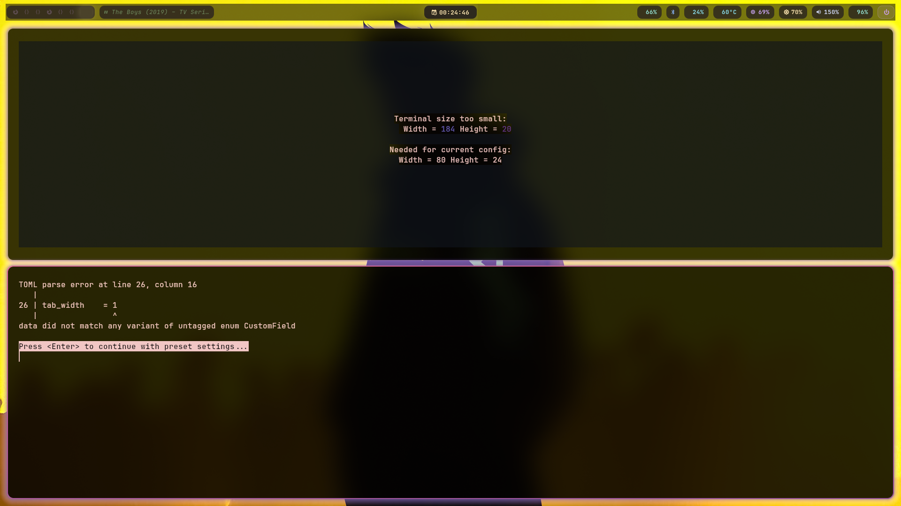

Keqing Electro
A breathtaking, dynamic Hyprland desktop environment for Arch Linux. Powered by Pywal, Waybar, and absolute elegance.
Lightning Fast & Beautiful
Dynamic Theming
Change your wallpaper with SUPER+T or SUPER+SHIFT+W and watch the entire OS color scheme adapt instantly using Pywal.
Epic Waybar
Floating glass islands, live app icons, Japanese Kanji workspace indicators, and integrated Bluetooth GUI.
Fluid Animations
Randomized bezier curves and transition effects when switching workspaces. Every switch feels uniquely satisfying.
The Showcase

Clean Aesthetics
Minimalist layout highlighting the custom Waybar and dynamic wallpaper.

Perfect Tiling
Hyprland's master layout with Yazi and Btop running natively in Kitty terminals.
Dynamic Workflow
Fully automated demonstration of Pywal instantly updating the entire system theme.

Instant Pywal Sync
Change wallpaper and watch active borders, terminal colors, and the bar instantly shift hues.